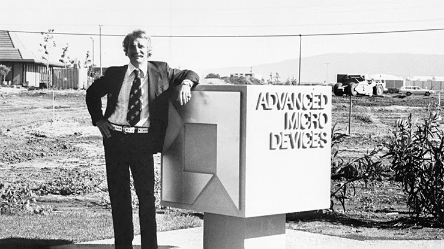

История
Advanced Micro Devices была официально зарегистрирована Джерри Сандерсом вместе с семью его коллегами из Fairchild Semiconductor 1 мая 1969 года. Сандерс, инженер-электрик, который был директором по маркетингу в Fairchild, как и многие руководители разочаровался в компании. Он решил уйти, чтобы основать собственную полупроводниковую компанию, идя по стопам Роберта Нойса (разработчика первой кремниевой интегральной схемы в Fairchild ) и Гордона Мура, которые вместе основали полупроводниковую компанию Intel в 1968 г. Стартовый капитал составлял $100 000. Компания начала свою деятельность как производитель логических интегральных микросхем.

В 1970 году AMD выпустила свой первый собственный продукт, логический счетчик Am2501, который имел большой успех.
4 июля 2006 года объявлено о поглощении ATI Technologies за $5,4 млрд, сделка завершена 24 октября 2006 года В начале 2012 года за $334 млн AMD купила компанию SeaMicro — производителя ультракомпактных и энергоэффективных серверов со сверхплотным размещением многопроцессорных конфигураций, которому принадлежала интеллектуальная собственность на сетевую архитектуру межпроцессорных соединений Freedom Fabric. 27 октября 2020 года корпорация AMD объявила о слиянии с компанией Xilinx — крупнейшим производителем программируемых логических интегральных схем (ПЛИС). Сумма этой сделки предположительно составит $35 млрд, в итоге которой появится объединённая компания, 74 % которой будет принадлежать AMD, тогда как акционеры Xilinx будут владеть оставшейся 26-процентной долей. Руководить объединённой компанией будет глава AMD Лиза Су. При этом состав совета директоров компании пополнится представителями Xilinx, а действующий руководитель этой компании перейдёт на пост президента AMD, отвечающего за профильный бизнес. 14 февраля 2022 года корпорация AMD завершила слияния с компанией Xilinx и его предполагаемая цена составила за $50 млрд.
Ryzen 7000
AMD на данный момент представила четыре процессора нового поколения: шестиядерный Ryzen 5 7600X, восьмиядерный Ryzen 7 7700X, 12-ядерный Ryzen 9 7900X и 16-ядерный флагман Ryzen 9 7950X:
Все они используют ядра Zen 4 и выполнены по 5-нм техпроцессу. Новая платформа приносит процессорный разъём под именем Socket AM5, а также поддержку PCI Express 5.0 и памяти DDR5. Все обозреватели отмечают значительную прибавку по части как одноядерной, так и многоядерной производительности по сравнению с процессорами Ryzen 5000-й серии. Процессоры во многих (но не всех) синтетических тестах и приложениях Ryzen 9 7950X и Ryzen 9 7900X оказались быстрее Core i9-12900K, а местами текущий флагман Intel уступил даже Ryzen 7 7700X.
Уже скоро компания Intel представит процессоры Core 13-го поколения. По слухам и утечкам они могут оказаться намного быстрее актуальных моделей 12-го поколения. Того, что AMD догнала и слегка обогнала процессоры Intel Alder Lake, может не хватить для успешной конкуренции с грядущими Raptor Lake. Так ли это, мы узнаем уже довольно скоро.